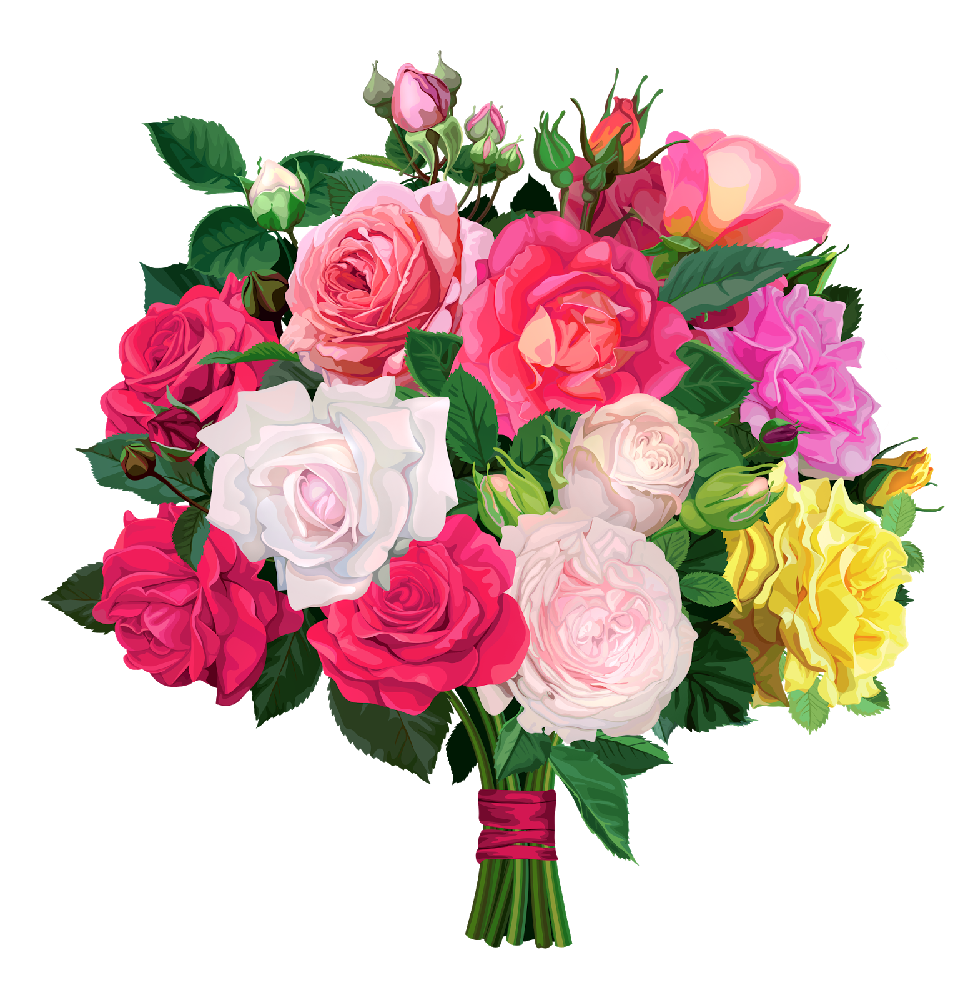
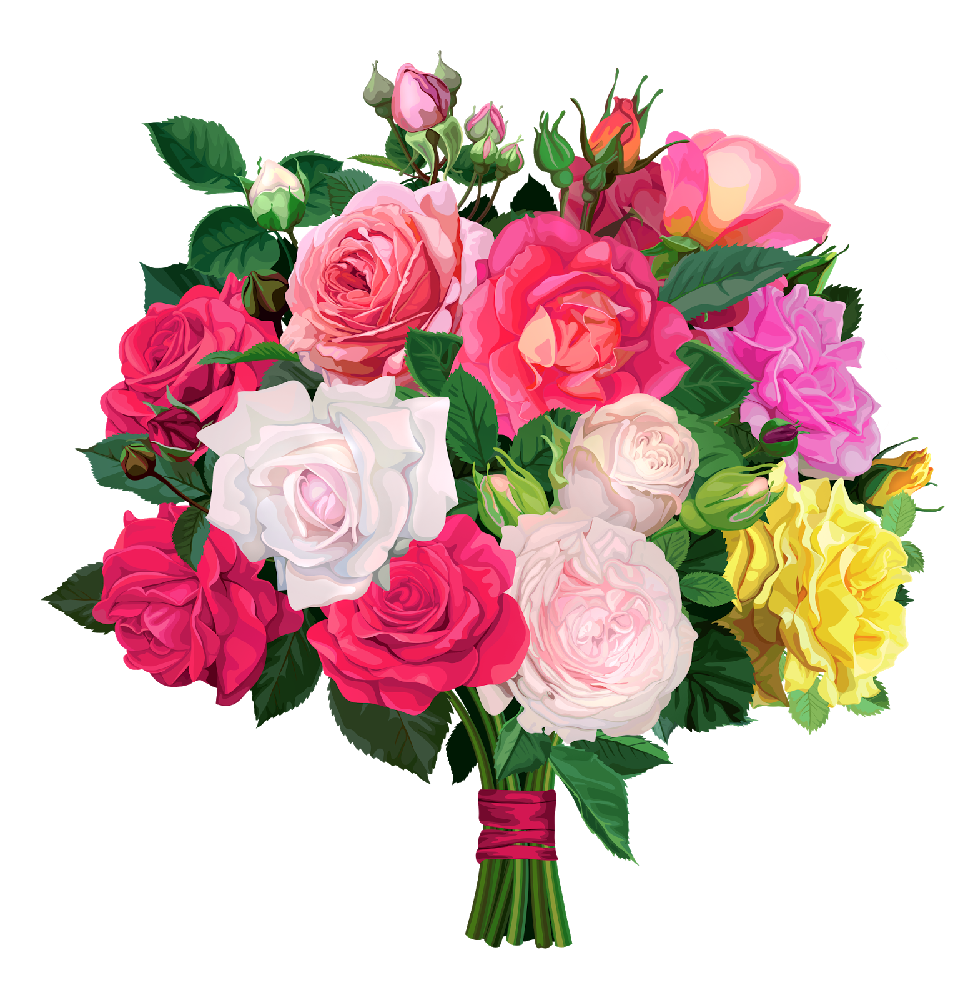

Дорогая мама Алеся!
Поздравляю тебя с 8 марта! Ты самая замечательная, добрая и красивая мама на свете!
Желаю тебе, чтобы каждый день был как весна — ярким, тёплым и полным радости.
Пусть твоя улыбка всегда сияет, как солнце, а в сердце цветут самые прекрасные цветы.
Спасибо тебе за всё, что ты для меня делаешь. Люблю тебя безгранично!
Твой сын, Марк.


 
